Яго (Yago) в GTA 6: все задания и прохождение
Опубликовано:
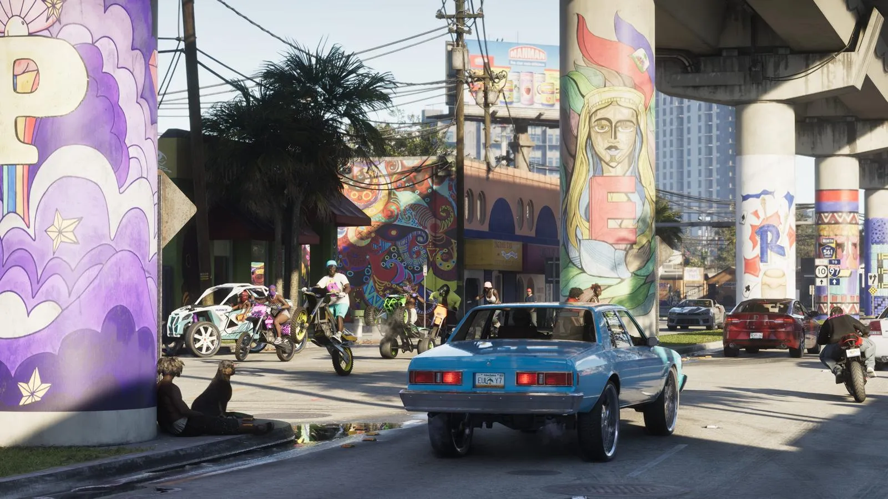
Коротко
- 4 задания в цепочке — ниже каждое по шагам.
- Цепочка засчитывается в трофей Strangers & Freaks.
Яго — уличный гонщик из Вайс-Сити. Его цепочка — гонки, тюнинг с закисью азота и одна гонка, которую легко пропустить: Race Against Yago ограничена по времени.
Все задания
| Задание | Где и когда |
|---|---|
| Join a Street Race | Глава 3 |
| Bumper to Bumper | Джейсон |
| Race Against Yago | Salton |
| Brother to Brother | Джейсон |
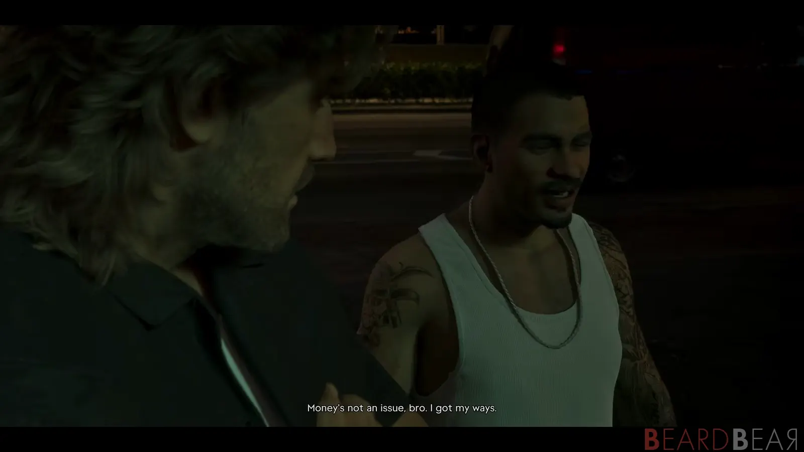
Join a Street Race
- Возьмите машину напрокат — $600–900.
- Выиграйте гонку.
Bumper to Bumper
- В тюнинге: Pro Builds → Full Kits → Custom Street Racing Build, затем Performance → Boost → Nitrous.
- Проедьте гонку и оторвитесь от полиции.
- Если задание под замком — просто поспите.
Race Against Yago
- Поговорите с Сантьяго и выберите маршрут «Freeway Run».
- Обгоните Яго.
- Не откладывайте: задание пропадёт, когда выйдет время.
Brother to Brother
- Заберите сумку.
- В финале выбор Save или Leave — на исход он не влияет.

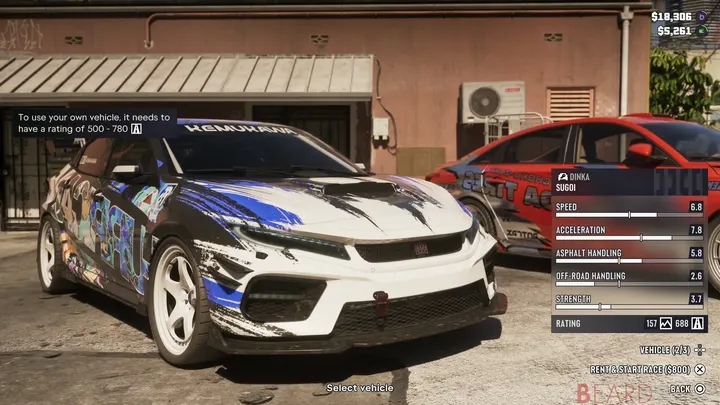

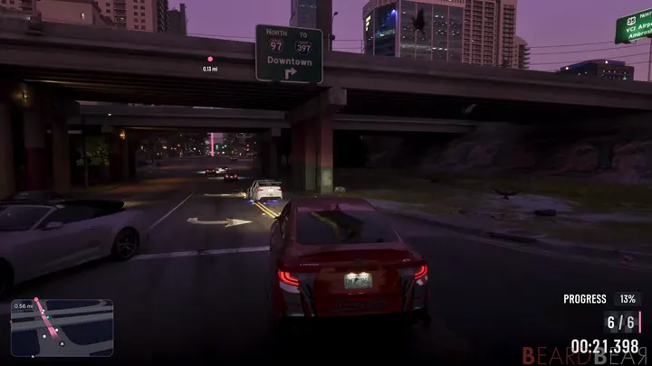

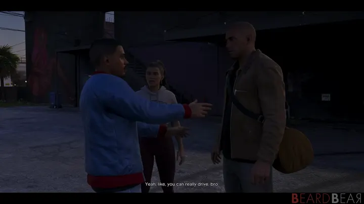

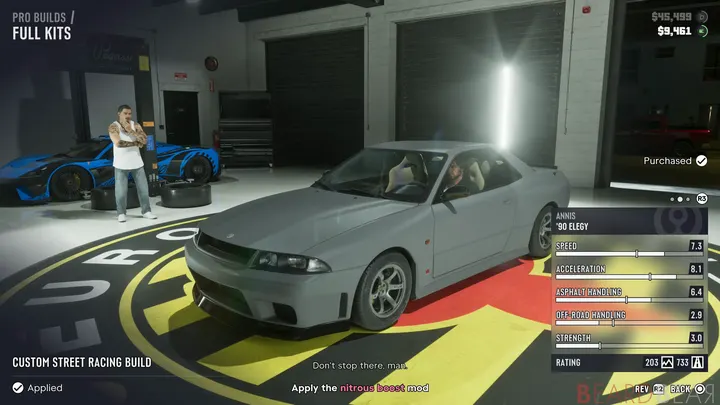

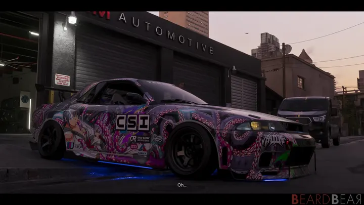

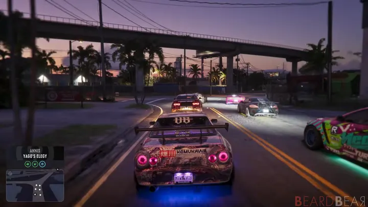

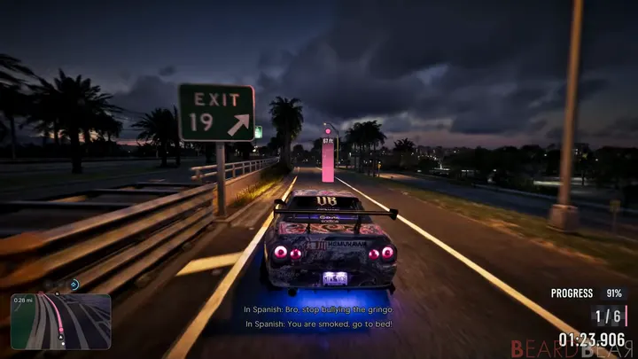

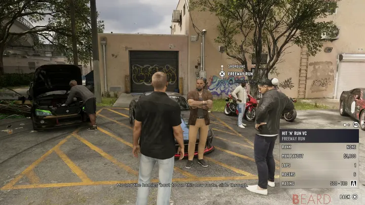

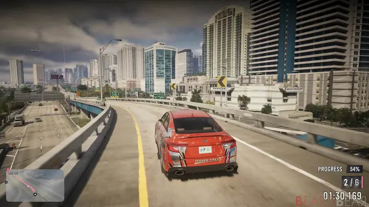

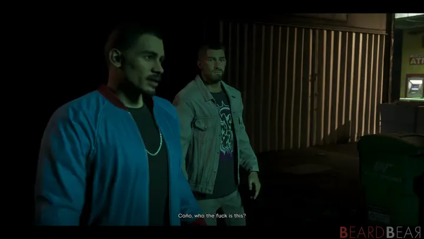

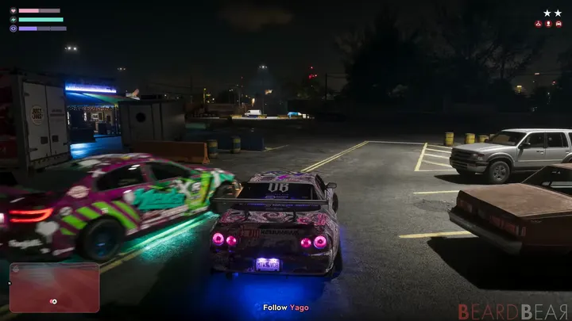

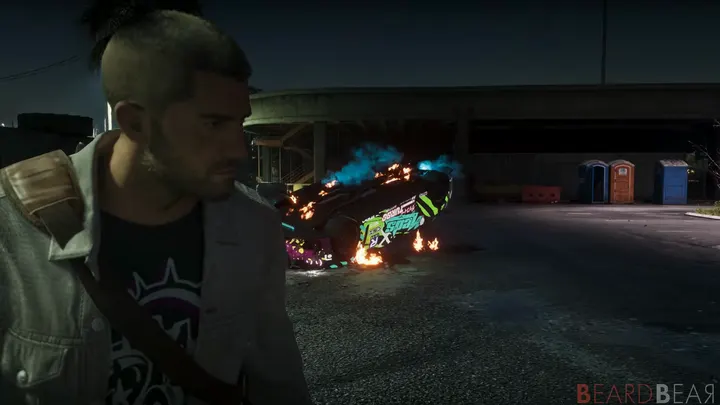
Частые вопросы
Как не пропустить гонку с Яго?
Race Against Yago ограничена по времени (песочные часы на значке) — проходите сразу, как появится.
Источники: PowerPyx — «Join a Street Race», «Bumper to Bumper», «Race Against Yago», «Brother to Brother», 19.11.2026. Кнопки — для PS5, в скобках — Xbox. Названия — как в английской версии игры.